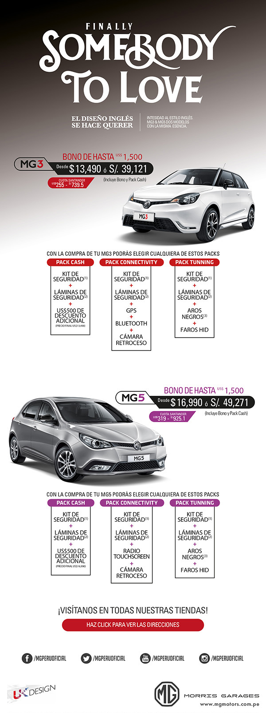

|  |
Foto referencial. Stock limitado. TCR de S/.2.90, válido el TC del día de la transacción. Cuotas calculadas en base a sistema de crédito Tradicional Santander Consumer, 60 meses, 30% de cuota inicial, cuotas dobles en Julio y Diciembre, seguro de desgravamen individual (0.1%), seguro vehicular endosado e incluyen IGV. Simulación con MG3 MT 2014 con el Pack Cash incluido, precio de venta US$ 13,490, cuota inicial US$ 4,047, cuota mensual de US$ 255 (S/.739.5). TEA 15.99% y TCEA 32.42%. Cuotas incluyen seguro de desgravamen individual, gestión y constitución de garantía y envío mensual de estados de cuenta. Simulación con MG5 MT 2014 con el Pack Cash incluido, precio de venta US$ 16,990, cuota inicial US$ 5,097, cuota mensual de US$ 319 (S/.925.1). TEA 15.99% y TCEA 32.01%. El pago se realizará mensual conforme al sistema de recaudo de SANTANDER CONSUMO PERU S.A. Tipo de Cambio referencial S/. 2.9, válido a la fecha 28/02/2015. Las condiciones antes señaladas son para créditos en dólares, considerando el año de 360 días. Aprobación del crédito sujeto a evaluación de antecedentes financieros y comerciales del cliente por parte de Santander Consumo Perú S.A. Cuota puede sufrir variaciones según condiciones del mercado al momento del cierre y fecha del desembolso. (1) Kit de seguridad: seguro de espejos laterales, seguro de faros delanteros y seguro de aros. (2) Láminas de seguridad (de 8 micras) + Polarizado. (3) En las versiones MG3 Sport y MG5 Turbo se reemplazará por un GPS. Fotos referenciales. Stock limitado. No incluye flete a provincia. |
| Si no deseas seguir recibiendo este novedades y promociones de Fiat Perú, puedes cancelar tu cuenta accediendo a tus datos en nuestro portal y pulsando "Eliminar suscripción". Automáticamente se anulará tu suscripción. Si quieres actualizar tus datos puedes acceder al enlace "Actualizar datos" |